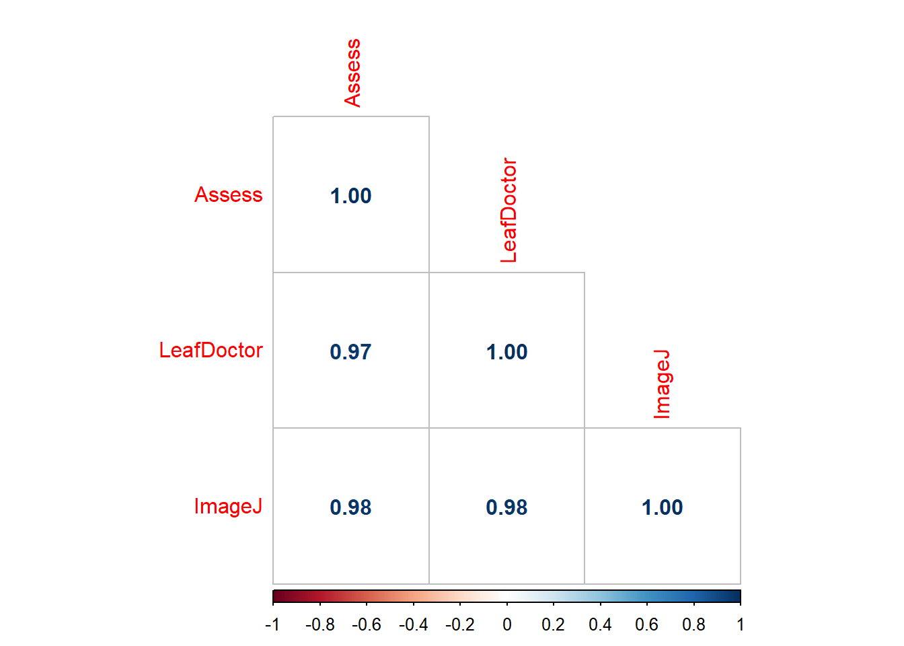

Pearson's product-moment correlation
data: imgs$Assess and imgs$LeafDoctor
t = 31.119, df = 68, p-value < 2.2e-16
alternative hypothesis: true correlation is not equal to 0
95 percent confidence interval:
0.9466882 0.9792005
sample estimates:
cor
0.9666367
cor(imgs$Assess, imgs$LeafDoctor)
[1] 0.9666367
library(corrplot)
Warning: pacote 'corrplot' foi compilado no R versão 4.4.1
corrplot 0.92 loaded
cor_imgs2 <-cor(imgs2)corrplot(cor_imgs2, method ="number", type ="lower")

library(corrplot)cor_imgs2 <-cor(imgs2)corrplot(cor_imgs2, method ="circle", type ="lower") #Pode ser square tabém, e escolher o type, esse pacote é muito mais customizável. diag False tira a diagonal
Outro conjunto de dados
library(AgroR)campo <-gsheet2tbl("https://docs.google.com/spreadsheets/d/1bq2N19DcZdtax2fQW9OHSGMR0X2__Z9T/edit#gid=866852711")campo2 <- campo |> dplyr::select(DFC, FER, PROD)corgraph(campo2)
Var1 Var2 cor p
2 FER DFC 0.9316978 9.864101e-15
3 PROD DFC -0.6928161 1.110652e-05
6 PROD FER -0.6258321 1.277444e-04
estande <-gsheet2tbl("https://docs.google.com/spreadsheets/d/1bq2N19DcZdtax2fQW9OHSGMR0X2__Z9T/edit#gid=401662555")estande |>ggplot(aes(trat, nplants))+geom_jitter(width =0.1, alpha =0.5)+facet_wrap(~ exp)+stat_summary(fun.data ="mean_cl_boot", size =0.5, color ="blue")+geom_smooth(method ="lm", se = F)
`geom_smooth()` using formula = 'y ~ x'
Foi pego os dados “estande”
exp2 <- estande |>filter(exp ==2)exp2 |>ggplot(aes(trat, nplants))+geom_point()+ylim(0,100)+geom_smooth(method="lm", se=FALSE, formula = y ~poly(x,2), color="black")+geom_smooth(method ="lm",se =FALSE)
`geom_smooth()` using formula = 'y ~ x'
# modelo linearexp2$trat2 <- exp2$trat^2# primeira ordemlm2 <-lm(nplants ~ trat, data = exp2)# segunda ordem ou quadráticolm3 <-lm(nplants ~ trat + trat2 , data = exp2)summary(lm2)
Call:
lm(formula = nplants ~ trat, data = exp2)
Residuals:
Min 1Q Median 3Q Max
-25.7816 -7.7150 0.5653 8.1929 19.2184
Coefficients:
Estimate Std. Error t value Pr(>|t|)
(Intercept) 60.9857 3.6304 16.798 4.93e-14 ***
trat -0.7007 0.1605 -4.365 0.000247 ***
---
Signif. codes: 0 '***' 0.001 '**' 0.01 '*' 0.05 '.' 0.1 ' ' 1
Residual standard error: 12.95 on 22 degrees of freedom
Multiple R-squared: 0.4641, Adjusted R-squared: 0.4398
F-statistic: 19.05 on 1 and 22 DF, p-value: 0.0002473
summary(lm3)
Call:
lm(formula = nplants ~ trat + trat2, data = exp2)
Residuals:
Min 1Q Median 3Q Max
-25.439 -6.019 1.789 8.016 19.561
Coefficients:
Estimate Std. Error t value Pr(>|t|)
(Intercept) 66.30156 4.42097 14.997 1.08e-12 ***
trat -1.77720 0.58467 -3.040 0.00623 **
trat2 0.02223 0.01166 1.906 0.07036 .
---
Signif. codes: 0 '***' 0.001 '**' 0.01 '*' 0.05 '.' 0.1 ' ' 1
Residual standard error: 12.24 on 21 degrees of freedom
Multiple R-squared: 0.5432, Adjusted R-squared: 0.4997
F-statistic: 12.49 on 2 and 21 DF, p-value: 0.0002675
AIC(lm2)
[1] 194.9597
AIC(lm3)
[1] 193.1284
Quando ajusta o modelo ele já dá as
Elevou ao quadrado para dar um coeficiente a mais, quanto mais coeficiente mais não linear ele fica.
Dois modelos, de primera ordem e de segunda ordem ou quadrado.
Se explica melhor com a quadrada (0,4997) do que com a linear(0,4398) (Verificar os dados)